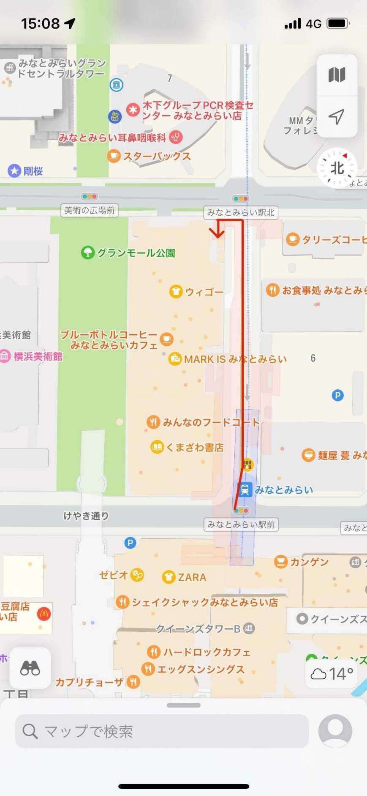

移動観察のまとめ
移動観察についてのまとめ、振り返り
2班の移動観察ではみなとみらい駅改札口から一番出口での観察を行いました。
今回この場所を観察場所に選んだ理由は改札から多くの人が出てくるため様々なデータをとることが出来ると考えたからである。

駅の改札のところが最も人が多く、出口に向かうにつれて人の数が減少していくさまが見て分かりやすく表れていました。
振り返り
今回の観察では、アウターを着ているか否か手に持っているか、性別、色について観察を行った。
今回は年齢層の部分では観察を行わなかったためそこにも注目することでもっと具体的な分布などが現れたのではないかと思った。